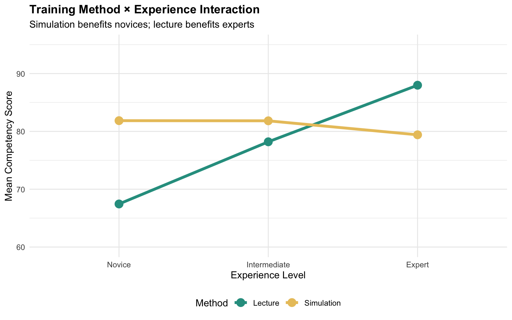
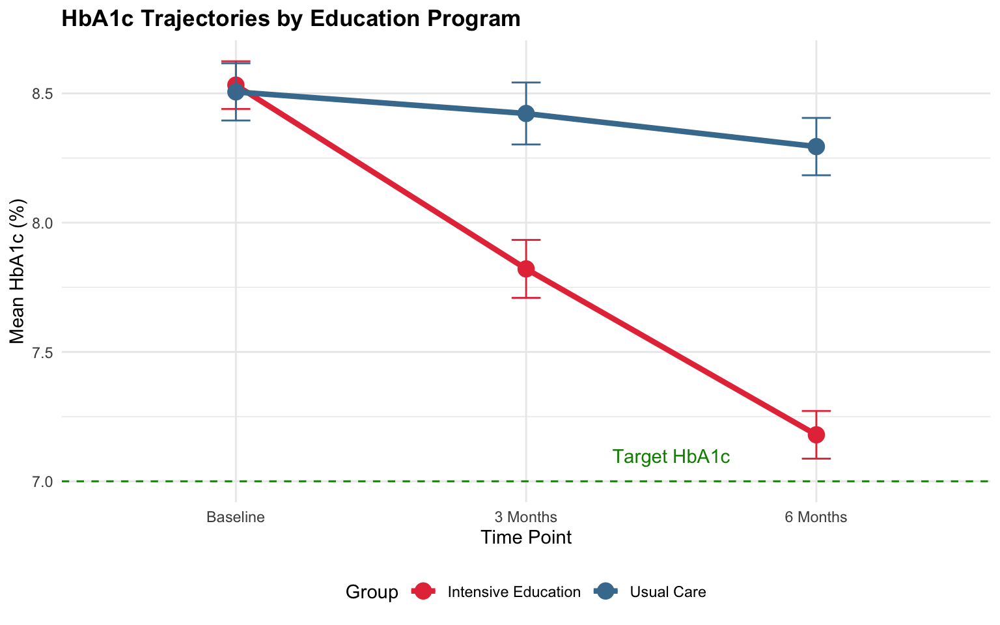

ANOVA 2: Two-Way ANOVA
MBA642: Business Analytics in Healthcare Management
Introduction to Two-Way ANOVA
Why Study Two Factors Simultaneously?
In healthcare settings, outcomes are rarely influenced by a single factor. Consider these scenarios:
- Does a new medication’s effectiveness depend on patient age group?
- Does a training program’s impact vary by nurse experience level?
- Does treatment success depend on both intervention type and disease severity?
One-way ANOVA can only examine one factor at a time. But what if the effect of one factor depends on the level of another factor? This is called an interaction effect, and it’s one of the most important concepts in healthcare research.
Two-way ANOVA allows us to:
- Test the effect of Factor A (main effect of A)
- Test the effect of Factor B (main effect of B)
- Test whether the effect of A depends on B (interaction effect A × B)
Main Effects vs. Interaction Effects
Main Effects
A main effect is the overall effect of one factor, averaging across all levels of the other factor.
- Main effect of Treatment: Does the treatment affect outcomes, regardless of patient group?
- Main effect of Patient Group: Do patient groups differ in outcomes, regardless of treatment?
Interaction Effect
An interaction effect occurs when the effect of one factor depends on the level of another factor.
- The new drug works well for younger patients but not for older patients
- The training program improves performance for novice nurses but not experienced nurses
When an interaction is present, main effects can be misleading! If a drug helps one group but harms another, the “average” effect might be zero—but this masks important clinical differences.
Overview of Two-Way ANOVA Designs
| Design | Factor A | Factor B | Example |
|---|---|---|---|
| Between-Subjects | Different subjects | Different subjects | Treatment type × Patient severity |
| Within-Subjects | Same subjects | Same subjects | Drug type × Time of day |
| Mixed Design | Different subjects | Same subjects | Training program × Assessment time |
Understanding Interaction Patterns
Visualizing Interactions
The easiest way to understand interactions is through interaction plots, where we plot means for each combination of factors. The pattern of lines tells us about the interaction.
Pattern 1: No Interaction (Parallel Lines)
When there is no interaction, the effect of one factor is the same across all levels of the other factor. The lines in the interaction plot are parallel.
Interpretation: The new treatment improves outcomes by 15 points for both mild and severe patients. The treatment effect is consistent regardless of severity.
Pattern 2: Ordinal Interaction (Converging/Diverging Lines)
In an ordinal interaction, the lines converge or diverge but do not cross. The effect of one factor is larger at some levels of the other factor, but the direction is the same.

Interpretation: The new treatment helps both groups, but it helps severe patients much more (+25 points) than mild patients (+10 points). The treatment is beneficial for everyone, but especially for those with severe disease.
Pattern 3: Disordinal (Crossover) Interaction
In a disordinal or crossover interaction, the lines cross. The effect of one factor reverses direction at different levels of the other factor.

Interpretation: The new treatment helps severe patients (+30 points) but harms mild patients (-10 points). The main effect of treatment might appear small or non-significant because the positive and negative effects cancel out—but this masks a critical clinical finding!
Why Interactions Matter in Healthcare
Interactions are particularly important in healthcare because:
- Personalized medicine: Treatment effectiveness often varies by patient characteristics
- Resource allocation: Interventions may work better in some settings than others
- Safety: A treatment safe for one population may be harmful for another
- Policy decisions: Program effectiveness may depend on implementation context
Always examine interactions before interpreting main effects! If a significant interaction exists, the main effects alone don’t tell the full story.
Two-Way Between-Subjects ANOVA
What is it?
A two-way between-subjects ANOVA tests the effects of two independent variables (factors) on a continuous dependent variable, where different participants are in each combination of factor levels.
Key Characteristics
- Two factors, each with 2+ levels
- Each participant is in only one cell of the design
- Tests three effects: Main effect A, Main effect B, A × B interaction
When to Use It
- Comparing treatment types across patient demographics
- Evaluating interventions across facility types
- Assessing programs across staff experience levels
Scenario 1: Treatment × Disease Severity
A clinical trial compares two treatments (Standard vs. Novel) for chronic pain across three severity levels (Mild, Moderate, Severe). The outcome is pain reduction score (0-100, higher = better).
Research questions: 1. Does the novel treatment reduce pain more than standard care? 2. Does pain reduction vary by baseline severity? 3. Does the treatment effect depend on severity (interaction)?
The Formula
Two-way ANOVA partitions variance into four components:
\[SS_{total} = SS_A + SS_B + SS_{A \times B} + SS_{error}\]
Three F-statistics are calculated:
\[F_A = \frac{MS_A}{MS_{error}}, \quad F_B = \frac{MS_B}{MS_{error}}, \quad F_{A \times B} = \frac{MS_{A \times B}}{MS_{error}}\]
The degrees of freedom: - Factor A: \(df_A = a - 1\) - Factor B: \(df_B = b - 1\) - Interaction: \(df_{A \times B} = (a-1)(b-1)\) - Error: \(df_{error} = N - ab\)
Where \(a\) = levels of A, \(b\) = levels of B, \(N\) = total sample size.
Example: Treatment × Disease Severity
# Pain reduction scores for 2 treatments × 3 severity levels
# 15 patients per cell = 90 total
n_per_cell <- 15
# Generate data with interaction effect
# Novel treatment works better for severe patients
set.seed(2026)
pain_data <- expand.grid(
treatment = c("Standard", "Novel"),
severity = c("Mild", "Moderate", "Severe"),
subject = 1:n_per_cell
) %>%
mutate(
# Base effect of severity (less reduction for more severe)
base = case_when(
severity == "Mild" ~ 70,
severity == "Moderate" ~ 55,
severity == "Severe" ~ 40
),
# Treatment effect varies by severity (interaction)
treatment_effect = case_when(
treatment == "Standard" ~ 0,
treatment == "Novel" & severity == "Mild" ~ 5,
treatment == "Novel" & severity == "Moderate" ~ 12,
treatment == "Novel" & severity == "Severe" ~ 22
),
# Add random error
pain_reduction = base + treatment_effect + rnorm(n(), 0, 6)
) %>%
mutate(
severity = factor(severity, levels = c("Mild", "Moderate", "Severe")),
treatment = factor(treatment, levels = c("Standard", "Novel"))
)| Treatment | Severity | Mean | SD |
|---|---|---|---|
| Standard | Mild | 68.7 | 4.9 |
| Standard | Moderate | 52.7 | 6.0 |
| Standard | Severe | 39.5 | 6.5 |
| Novel | Mild | 75.9 | 5.2 |
| Novel | Moderate | 67.0 | 5.0 |
| Novel | Severe | 63.0 | 7.8 |
Visualizing the Data

Conducting Two-Way Between-Subjects ANOVA in R
# Two-way ANOVA
anova_pain <- aov(pain_reduction ~ treatment * severity, data = pain_data)
summary(anova_pain) Df Sum Sq Mean Sq F value Pr(>F)
treatment 1 5053 5053 140.65 < 2e-16 ***
severity 2 6736 3368 93.74 < 2e-16 ***
treatment:severity 2 1011 505 14.06 5.39e-06 ***
Residuals 84 3018 36
---
Signif. codes: 0 '***' 0.001 '**' 0.01 '*' 0.05 '.' 0.1 ' ' 1Interpreting the ANOVA Table
The output shows three tests:
- treatment: Main effect of treatment (averaging across severity levels)
- severity: Main effect of severity (averaging across treatments)
- treatment:severity: Interaction effect
Results interpretation:
- Main effect of treatment: Significant—on average, the novel treatment leads to greater pain reduction
- Main effect of severity: Significant—pain reduction differs across severity levels
- Interaction: Significant—the treatment effect depends on severity level
When Interaction is Significant
Do not interpret main effects in isolation when the interaction is significant!
The significant interaction tells us that the novel treatment’s benefit varies by severity. To understand this pattern, we need to examine simple effects.
Simple Effects Analysis
Simple effects examine the effect of one factor at each level of the other factor. We use the emmeans package for this analysis.
# Get estimated marginal means
emm <- emmeans(anova_pain, ~ treatment | severity)
# Simple effects: treatment effect at each severity level
pairs(emm)severity = Mild:
contrast estimate SE df t.ratio p.value
Standard - Novel -7.13 2.19 84 -3.258 0.0016
severity = Moderate:
contrast estimate SE df t.ratio p.value
Standard - Novel -14.32 2.19 84 -6.544 <.0001
severity = Severe:
contrast estimate SE df t.ratio p.value
Standard - Novel -23.51 2.19 84 -10.740 <.0001Interpreting Simple Effects
This shows the treatment effect (Standard - Novel) at each severity level:
- Mild: Small difference (may or may not be significant)
- Moderate: Moderate difference
- Severe: Large difference
The novel treatment provides the greatest benefit for patients with severe disease.

Example 2: Training Method × Experience Level
A hospital evaluates two training methods (Lecture vs. Simulation) for medication safety competency across three experience levels (Novice: <1 year, Intermediate: 1-5 years, Expert: >5 years).
# Generate data with crossover interaction
n_cell <- 12
training_data <- expand.grid(
method = c("Lecture", "Simulation"),
experience = c("Novice", "Intermediate", "Expert"),
subject = 1:n_cell
) %>%
mutate(
# Crossover interaction: simulation helps novices but lecture helps experts
score = case_when(
method == "Lecture" & experience == "Novice" ~ 68,
method == "Lecture" & experience == "Intermediate" ~ 78,
method == "Lecture" & experience == "Expert" ~ 88,
method == "Simulation" & experience == "Novice" ~ 82,
method == "Simulation" & experience == "Intermediate" ~ 80,
method == "Simulation" & experience == "Expert" ~ 79
) + rnorm(n(), 0, 4),
experience = factor(experience, levels = c("Novice", "Intermediate", "Expert"))
)
# Two-way ANOVA
anova_training <- aov(score ~ method * experience, data = training_data)
summary(anova_training) Df Sum Sq Mean Sq F value Pr(>F)
method 1 179.1 179.1 10.18 0.00217 **
experience 2 993.0 496.5 28.22 1.39e-09 ***
method:experience 2 1586.6 793.3 45.09 4.52e-13 ***
Residuals 66 1161.2 17.6
---
Signif. codes: 0 '***' 0.001 '**' 0.01 '*' 0.05 '.' 0.1 ' ' 1# Simple effects
emm_train <- emmeans(anova_training, ~ method | experience)
pairs(emm_train)experience = Novice:
contrast estimate SE df t.ratio p.value
Lecture - Simulation -14.41 1.71 66 -8.414 <.0001
experience = Intermediate:
contrast estimate SE df t.ratio p.value
Lecture - Simulation -3.63 1.71 66 -2.120 0.0378
experience = Expert:
contrast estimate SE df t.ratio p.value
Lecture - Simulation 8.57 1.71 66 5.007 <.0001Clinical Implications
This crossover interaction has important practical implications:
- Novice nurses should receive simulation-based training
- Expert nurses may benefit more from lecture-based training (perhaps they can better contextualize theoretical content)
- Intermediate nurses show similar outcomes with either method
A one-size-fits-all training approach would be suboptimal.
Practice Activity 1: Intervention × Facility Type
A health system evaluates a care transition program across facility types. Analyze whether the intervention effect depends on facility type.
# 30-day readmission rates (%)
n_cell <- 10
intervention_data <- expand.grid(
program = c("Standard Discharge", "Enhanced Transition"),
facility = c("Urban Academic", "Suburban Community", "Rural Critical Access"),
id = 1:n_cell
) %>%
mutate(
readmit_rate = case_when(
program == "Standard Discharge" & facility == "Urban Academic" ~ 14,
program == "Standard Discharge" & facility == "Suburban Community" ~ 12,
program == "Standard Discharge" & facility == "Rural Critical Access" ~ 16,
program == "Enhanced Transition" & facility == "Urban Academic" ~ 9,
program == "Enhanced Transition" & facility == "Suburban Community" ~ 10,
program == "Enhanced Transition" & facility == "Rural Critical Access" ~ 8
) + rnorm(n(), 0, 1.5)
)
# Your code here:
# 1. Create an interaction plot
# 2. Run two-way ANOVA
# 3. Conduct simple effects analysis if interaction is significant
# 4. Interpret the results for healthcare administratorsPractice Activity 2: Medication × Age Group
Compare pain medication effectiveness across age groups:
n_cell <- 15
medication_data <- expand.grid(
medication = c("Drug A", "Drug B", "Drug C"),
age_group = c("Young (18-40)", "Middle (41-65)", "Older (65+)"),
patient = 1:n_cell
) %>%
mutate(
# Ordinal interaction: Drug C works better for older patients
pain_relief = case_when(
medication == "Drug A" ~ 55 + rnorm(n(), 0, 6),
medication == "Drug B" ~ 60 + rnorm(n(), 0, 6),
medication == "Drug C" & age_group == "Young (18-40)" ~ 58 + rnorm(n(), 0, 6),
medication == "Drug C" & age_group == "Middle (41-65)" ~ 68 + rnorm(n(), 0, 6),
medication == "Drug C" & age_group == "Older (65+)" ~ 78 + rnorm(n(), 0, 6)
)
)
# Your code here:Two-Way Within-Subjects ANOVA
What is it?
A two-way within-subjects ANOVA (also called two-way repeated-measures ANOVA) tests the effects of two factors where the same participants experience all combinations of both factors.
Key Characteristics
- Same participants measured under all conditions
- Both factors are within-subjects (repeated measures)
- More powerful than between-subjects designs (controls for individual differences)
- Requires fewer participants
When to Use It
- Same patients tested with different medications at different times of day
- Same staff evaluated on multiple tasks across multiple assessment periods
- Same clinics measured on different metrics in different seasons
Scenario: Medication Type × Time of Day
A study examines whether medication effectiveness varies by time of administration. The same 20 patients receive each of three medications at two times (morning and evening), with appropriate washout periods.
# Same 20 patients, all conditions
n_patients <- 20
# Generate data
within_data <- expand.grid(
patient_id = 1:n_patients,
medication = c("Med A", "Med B", "Med C"),
time = c("Morning", "Evening")
) %>%
mutate(
# Patient random effect
patient_effect = rep(rnorm(n_patients, 0, 5), 6),
# Fixed effects with interaction
fixed = case_when(
medication == "Med A" & time == "Morning" ~ 65,
medication == "Med A" & time == "Evening" ~ 60,
medication == "Med B" & time == "Morning" ~ 70,
medication == "Med B" & time == "Evening" ~ 72,
medication == "Med C" & time == "Morning" ~ 75,
medication == "Med C" & time == "Evening" ~ 68
),
effectiveness = fixed + patient_effect + rnorm(n(), 0, 3)
)
Conducting Two-Way Within-Subjects ANOVA in R
# Two-way within-subjects ANOVA
# Error term includes both factors nested within subject
within_anova <- aov(effectiveness ~ medication * time +
Error(patient_id/(medication * time)),
data = within_data)
summary(within_anova)
Error: patient_id
Df Sum Sq Mean Sq F value Pr(>F)
Residuals 1 97.2 97.2
Error: patient_id:medication
Df Sum Sq Mean Sq
medication 2 1744 872.1
Error: patient_id:time
Df Sum Sq Mean Sq
time 1 265.2 265.2
Error: patient_id:medication:time
Df Sum Sq Mean Sq
medication:time 2 397.1 198.6
Error: Within
Df Sum Sq Mean Sq F value Pr(>F)
medication 2 629 314.38 7.770 0.000704 ***
time 1 62 61.69 1.525 0.219604
medication:time 2 293 146.27 3.615 0.030222 *
Residuals 108 4370 40.46
---
Signif. codes: 0 '***' 0.001 '**' 0.01 '*' 0.05 '.' 0.1 ' ' 1Interpreting the Output
The output shows separate error strata:
- patient_id:medication - Error term for medication main effect
- patient_id:time - Error term for time main effect
- patient_id:medication:time - Error term for interaction
# Post-hoc comparisons
# Simple effects of time at each medication level
emm_within <- emmeans(within_anova, ~ time | medication)
pairs(emm_within)medication = Med A:
contrast estimate SE df t.ratio p.value
Morning - Evening 7.05 4.18 108 1.687 0.0945
medication = Med B:
contrast estimate SE df t.ratio p.value
Morning - Evening -6.18 4.18 108 -1.478 0.1423
medication = Med C:
contrast estimate SE df t.ratio p.value
Morning - Evening 8.06 4.18 108 1.930 0.0563Interpretation
- Med A: Higher effectiveness in morning (significant)
- Med B: Similar effectiveness morning/evening (not significant)
- Med C: Higher effectiveness in morning (significant)
Clinical implication: Timing matters for Medications A and C but not for B.
Practice Activity 3: Task Type × Shift Period
The same 15 nurses are evaluated on two task types (Documentation, Patient Care) across three shift periods (Beginning, Middle, End):
n_nurses <- 15
task_data <- expand.grid(
nurse_id = 1:n_nurses,
task = c("Documentation", "Patient Care"),
period = c("Beginning", "Middle", "End")
) %>%
mutate(
nurse_effect = rep(rnorm(n_nurses, 0, 4), 6),
# Performance declines more for documentation than patient care
fixed = case_when(
task == "Documentation" & period == "Beginning" ~ 90,
task == "Documentation" & period == "Middle" ~ 82,
task == "Documentation" & period == "End" ~ 70,
task == "Patient Care" & period == "Beginning" ~ 88,
task == "Patient Care" & period == "Middle" ~ 85,
task == "Patient Care" & period == "End" ~ 80
),
performance = fixed + nurse_effect + rnorm(n(), 0, 3),
period = factor(period, levels = c("Beginning", "Middle", "End"))
)
# Your code here:
# 1. Create interaction plot
# 2. Run two-way within-subjects ANOVA
# 3. Interpret the interactionMixed Design ANOVA
What is it?
A mixed design ANOVA (also called split-plot ANOVA) combines both between-subjects and within-subjects factors. This is one of the most common designs in healthcare research.
Key Characteristics
- One or more between-subjects factors: Different participants in each group
- One or more within-subjects factors: Same participants measured repeatedly
- Tests main effects of both factor types and their interaction
When to Use It
Mixed designs are ideal for:
- Clinical trials: Treatment group (between) × Time points (within)
- Training studies: Program type (between) × Assessment occasions (within)
- Quality improvement: Intervention group (between) × Pre/post measurements (within)
Scenario: Training Program × Assessment Time
A hospital compares three training programs for improving nursing competency. Nurses are randomly assigned to one program (between-subjects factor) and assessed at four time points (within-subjects factor): Pre-training, Immediate post, 1 month, and 3 months.
n_per_group <- 20
mixed_data <- expand.grid(
nurse_id = 1:(n_per_group * 3),
time = c("Pre", "Post", "1 Month", "3 Months")
) %>%
mutate(
# Assign to groups
program = rep(rep(c("Traditional", "Simulation", "Blended"),
each = n_per_group), 4),
# Nurse random effect
nurse_effect = rep(rnorm(n_per_group * 3, 0, 4), 4),
# Fixed effects
fixed = case_when(
# Traditional: modest improvement, some decay
program == "Traditional" & time == "Pre" ~ 65,
program == "Traditional" & time == "Post" ~ 75,
program == "Traditional" & time == "1 Month" ~ 72,
program == "Traditional" & time == "3 Months" ~ 68,
# Simulation: good improvement, maintained
program == "Simulation" & time == "Pre" ~ 65,
program == "Simulation" & time == "Post" ~ 82,
program == "Simulation" & time == "1 Month" ~ 80,
program == "Simulation" & time == "3 Months" ~ 78,
# Blended: best improvement, well maintained
program == "Blended" & time == "Pre" ~ 65,
program == "Blended" & time == "Post" ~ 88,
program == "Blended" & time == "1 Month" ~ 87,
program == "Blended" & time == "3 Months" ~ 85
),
score = fixed + nurse_effect + rnorm(n(), 0, 3),
time = factor(time, levels = c("Pre", "Post", "1 Month", "3 Months"))
)| Program | Time | Mean | SD |
|---|---|---|---|
| Blended | Pre | 66.6 | 6.5 |
| Blended | Post | 88.7 | 5.9 |
| Blended | 1 Month | 88.2 | 4.4 |
| Blended | 3 Months | 86.1 | 6.8 |
| Simulation | Pre | 65.9 | 4.7 |
| Simulation | Post | 81.8 | 4.4 |
| Simulation | 1 Month | 79.6 | 4.3 |
| Simulation | 3 Months | 78.3 | 4.5 |
| Traditional | Pre | 64.3 | 6.0 |
| Traditional | Post | 73.3 | 4.9 |
| Traditional | 1 Month | 70.9 | 5.8 |
| Traditional | 3 Months | 67.8 | 4.8 |
Visualizing Mixed Design Data

Conducting Mixed Design ANOVA in R
# Mixed design ANOVA
# Error term only includes within-subjects factor
mixed_anova <- aov(score ~ program * time + Error(nurse_id/time),
data = mixed_data)
summary(mixed_anova)
Error: nurse_id
Df Sum Sq Mean Sq
program 1 6392 6392
Error: nurse_id:time
Df Sum Sq Mean Sq
time 3 10056 3352
Error: Within
Df Sum Sq Mean Sq F value Pr(>F)
program 2 736 368.2 12.805 5.42e-06 ***
time 3 459 153.0 5.320 0.00147 **
program:time 6 237 39.5 1.375 0.22573
Residuals 224 6440 28.8
---
Signif. codes: 0 '***' 0.001 '**' 0.01 '*' 0.05 '.' 0.1 ' ' 1Interpreting the Output
Two error strata:
- nurse_id (between-subjects error): Tests the main effect of program
- nurse_id:time (within-subjects error): Tests time and program × time interaction
Key Findings
- Program main effect: Significant—programs differ in overall effectiveness
- Time main effect: Significant—scores change over time
- Program × Time interaction: Significant—patterns of change differ by program
Simple Effects Analysis
# Compare programs at each time point
emm_mixed <- emmeans(mixed_anova, ~ program | time)
pairs(emm_mixed)time = Pre:
contrast estimate SE df t.ratio p.value
Blended - Simulation 0.147 2.94 224 0.050 0.9986
Blended - Traditional 1.134 5.09 224 0.223 0.9730
Simulation - Traditional 0.986 2.94 224 0.336 0.9398
time = Post:
contrast estimate SE df t.ratio p.value
Blended - Simulation 8.863 2.94 224 3.015 0.0080
Blended - Traditional 19.338 5.09 224 3.797 0.0006
Simulation - Traditional 10.475 2.94 224 3.564 0.0013
time = 1 Month:
contrast estimate SE df t.ratio p.value
Blended - Simulation 6.278 2.94 224 2.136 0.0850
Blended - Traditional 12.603 5.09 224 2.475 0.0373
Simulation - Traditional 6.325 2.94 224 2.152 0.0820
time = 3 Months:
contrast estimate SE df t.ratio p.value
Blended - Simulation 7.514 2.94 224 2.556 0.0301
Blended - Traditional 17.687 5.09 224 3.473 0.0018
Simulation - Traditional 10.174 2.94 224 3.461 0.0019
P value adjustment: tukey method for comparing a family of 3 estimates # Compare time points within each program
emm_time <- emmeans(mixed_anova, ~ time | program)
pairs(emm_time)program = Blended:
contrast estimate SE df t.ratio p.value
Pre - Post -28.56 8.74 224 -3.267 0.0068
Pre - 1 Month -17.15 8.74 224 -1.962 0.2056
Pre - 3 Months -20.16 8.74 224 -2.307 0.0996
Post - 1 Month 11.41 8.74 224 1.305 0.5604
Post - 3 Months 8.40 8.74 224 0.961 0.7718
1 Month - 3 Months -3.01 8.74 224 -0.345 0.9859
program = Simulation:
contrast estimate SE df t.ratio p.value
Pre - Post -19.84 5.45 224 -3.641 0.0019
Pre - 1 Month -11.02 5.45 224 -2.022 0.1830
Pre - 3 Months -12.79 5.45 224 -2.348 0.0905
Post - 1 Month 8.82 5.45 224 1.620 0.3697
Post - 3 Months 7.05 5.45 224 1.293 0.5681
1 Month - 3 Months -1.78 5.45 224 -0.326 0.9880
program = Traditional:
contrast estimate SE df t.ratio p.value
Pre - Post -10.35 2.46 224 -4.208 0.0002
Pre - 1 Month -5.68 2.46 224 -2.308 0.0993
Pre - 3 Months -3.61 2.46 224 -1.466 0.4599
Post - 1 Month 4.67 2.46 224 1.900 0.2310
Post - 3 Months 6.75 2.46 224 2.742 0.0332
1 Month - 3 Months 2.07 2.46 224 0.842 0.8343
P value adjustment: tukey method for comparing a family of 4 estimates Clinical Interpretation
- All programs show significant improvement immediately post-training
- Traditional shows significant decay from Post to 3 Months
- Simulation maintains gains well
- Blended maintains gains best
Recommendation: Despite higher initial costs, the blended program provides the best long-term knowledge retention.
Example 2: Intervention Group × Measurement Occasions
A diabetes education program randomizes patients to two groups and measures HbA1c at three time points:
n_group <- 25
diabetes_mixed <- expand.grid(
patient_id = 1:(n_group * 2),
time = c("Baseline", "3 Months", "6 Months")
) %>%
mutate(
group = rep(rep(c("Usual Care", "Intensive Education"), each = n_group), 3),
patient_effect = rep(rnorm(n_group * 2, 0, 0.5), 3),
fixed = case_when(
group == "Usual Care" & time == "Baseline" ~ 8.5,
group == "Usual Care" & time == "3 Months" ~ 8.3,
group == "Usual Care" & time == "6 Months" ~ 8.2,
group == "Intensive Education" & time == "Baseline" ~ 8.5,
group == "Intensive Education" & time == "3 Months" ~ 7.8,
group == "Intensive Education" & time == "6 Months" ~ 7.2
),
hba1c = fixed + patient_effect + rnorm(n(), 0, 0.3),
time = factor(time, levels = c("Baseline", "3 Months", "6 Months"))
)
# Mixed ANOVA
diabetes_anova <- aov(hba1c ~ group * time + Error(patient_id/time),
data = diabetes_mixed)
summary(diabetes_anova)
Error: patient_id
Df Sum Sq Mean Sq
group 1 7.21 7.21
Error: patient_id:time
Df Sum Sq Mean Sq
time 2 21.37 10.68
Error: Within
Df Sum Sq Mean Sq F value Pr(>F)
group 1 5.04 5.042 17.512 5e-05 ***
time 2 0.05 0.027 0.094 0.9100
group:time 2 2.12 1.062 3.688 0.0275 *
Residuals 141 40.60 0.288
---
Signif. codes: 0 '***' 0.001 '**' 0.01 '*' 0.05 '.' 0.1 ' ' 1# Simple effects
emmeans(diabetes_anova, ~ group | time) %>% pairs()time = Baseline:
contrast estimate SE df t.ratio p.value
Intensive Education - Usual Care -0.0855 0.304 141 -0.282 0.7786
time = 3 Months:
contrast estimate SE df t.ratio p.value
Intensive Education - Usual Care -0.8997 0.304 141 -2.962 0.0036
time = 6 Months:
contrast estimate SE df t.ratio p.value
Intensive Education - Usual Care -1.2162 0.304 141 -4.004 0.0001Interpretation
The significant interaction shows that while both groups started at similar HbA1c levels, the intensive education group showed greater improvement over time. The simple effects reveal:
- Baseline: No difference between groups (as expected from randomization)
- 3 Months: Significant difference emerges
- 6 Months: Difference widens further
Practice Activity 4: Therapy Type × Session Number
Compare two therapy approaches for anxiety (CBT vs. Mindfulness) across five therapy sessions:
n_group <- 18
therapy_data <- expand.grid(
patient_id = 1:(n_group * 2),
session = c("Session 1", "Session 2", "Session 3", "Session 4", "Session 5")
) %>%
mutate(
therapy = rep(rep(c("CBT", "Mindfulness"), each = n_group), 5),
patient_effect = rep(rnorm(n_group * 2, 0, 4), 5),
# CBT shows faster initial improvement; Mindfulness catches up
fixed = case_when(
therapy == "CBT" & session == "Session 1" ~ 65,
therapy == "CBT" & session == "Session 2" ~ 55,
therapy == "CBT" & session == "Session 3" ~ 48,
therapy == "CBT" & session == "Session 4" ~ 44,
therapy == "CBT" & session == "Session 5" ~ 42,
therapy == "Mindfulness" & session == "Session 1" ~ 65,
therapy == "Mindfulness" & session == "Session 2" ~ 62,
therapy == "Mindfulness" & session == "Session 3" ~ 55,
therapy == "Mindfulness" & session == "Session 4" ~ 46,
therapy == "Mindfulness" & session == "Session 5" ~ 40
),
anxiety = fixed + patient_effect + rnorm(n(), 0, 3),
session = factor(session, levels = c("Session 1", "Session 2", "Session 3",
"Session 4", "Session 5"))
)
# Your code here:
# 1. Create interaction plot
# 2. Run mixed design ANOVA
# 3. Conduct simple effects analysis
# 4. What would you tell patients about choosing between therapies?Practice Activity 5: Facility Type × Quarter
A health system tracks patient safety scores (0-100) across three facility types over four quarters:
n_facilities <- 8
safety_data <- expand.grid(
facility_id = 1:(n_facilities * 3),
quarter = c("Q1", "Q2", "Q3", "Q4")
) %>%
mutate(
type = rep(rep(c("Urban", "Suburban", "Rural"), each = n_facilities), 4),
facility_effect = rep(rnorm(n_facilities * 3, 0, 3), 4),
fixed = case_when(
type == "Urban" ~ 80 + as.numeric(factor(quarter)) * 1.5,
type == "Suburban" ~ 78 + as.numeric(factor(quarter)) * 2,
type == "Rural" ~ 72 + as.numeric(factor(quarter)) * 3
),
score = fixed + facility_effect + rnorm(n(), 0, 2)
)
# Your code here:Interpreting Two-Way ANOVA Results
Decision Framework
Step 1: Check the Interaction First
Always examine the interaction effect first!
- If interaction is significant: Focus on simple effects; main effects may be misleading
- If interaction is NOT significant: Interpret main effects directly
Step 2: If Interaction is Significant
- Create and examine interaction plot
- Identify the pattern (ordinal vs. disordinal)
- Conduct simple effects analysis
- Interpret in context
Step 3: If No Interaction
- Interpret main effect of Factor A (if significant)
- Interpret main effect of Factor B (if significant)
- Use post-hoc tests if factors have 3+ levels
Reporting Results
Example Write-up (with significant interaction)
A two-way ANOVA revealed a significant main effect of treatment, F(1, 84) = 45.32, p < .001, and a significant main effect of disease severity, F(2, 84) = 38.67, p < .001. These main effects were qualified by a significant Treatment × Severity interaction, F(2, 84) = 12.45, p < .001.
Simple effects analysis showed that the novel treatment significantly improved outcomes for patients with severe disease (M difference = 22.3, p < .001) and moderate disease (M difference = 12.1, p < .001), but not for patients with mild disease (M difference = 4.8, p = .089).
Example Write-up (no interaction)
A two-way ANOVA revealed a significant main effect of training method, F(2, 54) = 18.92, p < .001, but no significant main effect of experience level, F(2, 54) = 2.34, p = .107, and no significant interaction, F(4, 54) = 0.89, p = .478.
Post-hoc comparisons (Tukey HSD) indicated that blended training (M = 89.2) produced significantly higher scores than both simulation (M = 82.1, p = .002) and traditional training (M = 78.4, p < .001).
Summary
Key Takeaways
| Design | Between Factor | Within Factor | R Formula |
|---|---|---|---|
| Between-Subjects | A, B | — | aov(y ~ A * B) |
| Within-Subjects | — | A, B | aov(y ~ A * B + Error(id/(A*B))) |
| Mixed | A | B | aov(y ~ A * B + Error(id/B)) |
Interaction Patterns Summary
| Pattern | Lines | Interpretation |
|---|---|---|
| No interaction | Parallel | Effect of A is same at all levels of B |
| Ordinal | Converge/diverge | Effect of A varies in magnitude but not direction |
| Disordinal | Cross | Effect of A reverses direction across levels of B |
Clinical Importance
- Two-way ANOVA enables examination of how multiple factors combine to influence outcomes
- Interactions reveal that “one size fits all” approaches may be suboptimal
- Simple effects identify which specific subgroups benefit most from interventions
- Understanding interactions supports personalized medicine and targeted resource allocation
References and Further Reading
- Field, A. (2018). Discovering Statistics Using IBM SPSS Statistics (5th ed.). SAGE Publications.
- Maxwell, S. E., & Delaney, H. D. (2004). Designing Experiments and Analyzing Data (2nd ed.). Psychology Press.
- Navarro, D. (2019). Learning Statistics with R. Available online.
- Wickham, H., & Grolemund, G. (2017). R for Data Science. O’Reilly Media.